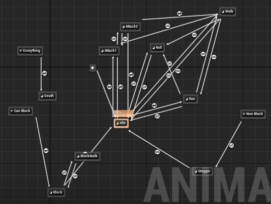
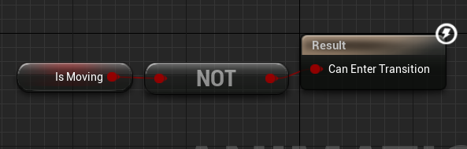
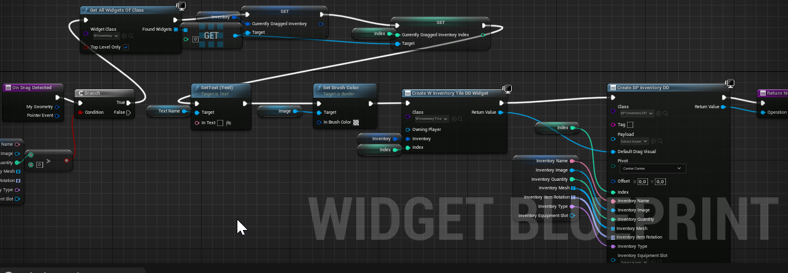
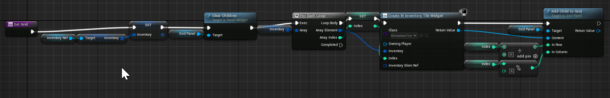

Pavel
Game Programmer
| Project Type | School / Solo Project |
| Software Used | Unreal Engine 5 |
| Languages Used | C++ / Blueprints |
| Primary Role(s) | Everything |
This was a one person project I done in school to graduate during my last year at SPŠ PI. The main focus of the project was to create computer game similar to Dark Souls in Unreal Engine 5. The following sections contain snippets of code and blueprints but not all of it. If you want to check out all of it you can do so here.
Player movement is one of the things which were the most inspired by the Darks Souls series. That means that player can walk, run and roll. For this behavior I used Unreal Engine's ACharacter class and it's functions.
The animations were taken either from the model or from Mixamo. The animations from Mixamo had to be changed using the Retargeter tool to work properly.
This blueprint snippet shows how the animation states are connected together.
This blueprint snippet shows one of the rules which manages the change on animation state.
The following code snippet shows how I managed to make player move horizontal. The vertical movement works the same but with different axis.
void AMyPlayer::MoveHorizontal(float horizontal) {
//player can only move if he isn't staggered by the enemies
if (!isStaggered) {
//when in roll player is locked to move only in the roll direction until the roll is done
if (!isRolling) {
//player is locked from moving when he is attacking
if (!isLightAttacking1 && !isLightAttacking2) {
//stores the last horizontal input in case player would decide to roll
horizontalForRoll = horizontal;
//player's movement is based on where the camera is looking
FRotator rightRotation = cameraAttach->GetComponentRotation();
//we only want to rotate the player on the Yaw axis
//because other axis could cause weird rotations occurring
FRotator yawRotation(0.0f, rightRotation.Yaw, 0.0f);
//direction based on the current camera rotation
FVector rightDirection = FRotationMatrix(yawRotation).GetUnitAxis(EAxis::Y);
if (isRunning) {
if (horizontal != 0) {
//lets the stamina system know that player is currently running
currentStaminaDrain = sprintStaminaDrain;
//sets speed to runningSpeed so player walks faster
movementComponent->MaxWalkSpeed = runningSpeed;
}
}
else {
//if player is not running then the walkSpeed is set to normal walk speed
movementComponent->MaxWalkSpeed = playerMovespeed;
}
//makes player move in the rotation direction based on horizontal (input from player - A or D)
AddMovementInput(rightDirection, horizontal);
if (horizontal != 0) {
//isMoving is variable used in animations
//setting it to true makes player enter moving state in animation
isMoving = true;
//rotates the player model to the direction he is headed
AMyPlayer::RotateToMovementHorizontal(horizontal);
}
}
}
}
}
The following code shows how I rotate player to rotation. This is necessary because in Dark Souls games the forward is always where the camera is looking. So when player decides to rotate the camera and walk the player model should rotate properly. Just like the previous code the concept is the same for horizontal and vertical movement.
void AMyPlayer::RotateToMovementHorizontal(float horizontal) {
//player model should rotate based on camera only when player isn't locked on enemy
//because if player is locked on the enemy then the player model is facing the enemy
if (!lockedOnEnemy) {
if (horizontal < 0) {
//smoothly rotates player mesh from his current rotation towards the camera rotation
playerSkeletalMesh->SetWorldRotation(FMath::RInterpTo(playerSkeletalMesh->GetComponentRotation(), FRotator(0, cameraAttach->GetComponentRotation().Yaw - 180, 0), 0.03f, 10.0f));
}
if (horizontal > 0)
{
//smoothly rotates player mesh from his current rotation towards the camera rotation
playerSkeletalMesh->SetWorldRotation(FMath::RInterpTo(playerSkeletalMesh->GetComponentRotation(), FRotator(0, cameraAttach->GetComponentRotation().Yaw - 360, 0), 0.03f, 10.0f));
}
}
}
The following code shows two functions which handle player running. The isRunning variable is used to detect which animation state should be played.
void AMyPlayer::StartRun() {
//player can only run if he has at least some stamina left
if (currentStamina > 0.0f) {
//enables the running animation
isRunning = true;
}
}
//called once player lets go of the SHIFT key or his stamina reaches 0
void AMyPlayer::StopRun() {
//disables the running animation
isRunning = false;
}
The following code snippet shows what happens when player presses the roll key. This function calls HandleRolling function which handles all the roll movement.
void AMyPlayer::StartRoll() {
//player can only roll when he isn't attacking
if (!isLightAttacking1 && !isLightAttacking2) {
//prevents player to spam the roll
if (!isRolling) {
//player can only roll if he has enough stamina
if (currentStamina >= rollStaminaDrain) {
//makes player enter roll animation state
isRolling = true;
//player rolls have a certain duration which is handled by currentRollTime and rollAnimDuration
currentRollTime = 0.0f;
//decreases the stamina by rollStaminaDrain when player starts the roll
currentStamina -= rollStaminaDrain;
//resets the player stamina recovery time
currentStaminaRecoveryTime = 0.0f;
//makes player move in the roll direction
HandleRolling();
}
}
}
}
The following code snippet shows how the roll is handled until the animation is finished.
void AMyPlayer::HandleRolling() {
//player should only be moving roll like when he is in roll
if (isRolling) {
FRotator rotation = playerSkeletalMesh->GetComponentRotation();
FRotator yawRotation(0, rotation.Yaw, 0);
FVector direction = FVector(0, 0, 0);
//if the player is locked on enemy he rolls relative to him and input
if (lockedOnEnemy) {
if (horizontalForRoll != 0) {
direction += FRotationMatrix(yawRotation).GetUnitAxis(EAxis::X) * -horizontalForRoll;
}
if (verticalForRoll != 0) {
direction += FRotationMatrix(yawRotation).GetUnitAxis(EAxis::Y) * verticalForRoll;
}
}
//if player is not locked he rolls the direction he is currently facing
if (direction.IsZero()) {
direction = FRotationMatrix(yawRotation).GetUnitAxis(EAxis::Y);
}
//makes player move in the direction of the roll
movementComponent->MaxWalkSpeed = rollSpeed;
AddMovementInput(direction, 1);
//increases the time that player is rolling
currentRollTime += deltaTimeForRolling;
}
//stop the player roll once he has finished rolling
if (currentRollTime >= rollAnimDuration) {
isRolling = false;
}
}
Camera system is made to be almost identical to the one in the Dark Souls games. That means that player can move the camera with the mouse or lock the camera on to enemies.
The following code snippet shows that camera movement is done by rotation of the camera. The only difference between horizontal and vertical is the axis they affect. InvertedMouse can be only 1 or -1 based on if the mouse is set as inverted or not.
void AMyPlayer::CameraHorizontal(float horizontal) {
if (!lockedOnEnemy) {
cameraAttach->AddLocalRotation(FRotator(0, cameraRotationSpeed * horizontal, 0));
}
}
void AMyPlayer::CameraVertical(float vertical) {
if (!lockedOnEnemy) {
cameraAttach->AddLocalRotation(FRotator(cameraRotationSpeed * vertical * invertedMouse, 0, 0));
}
}
The following code snippet shows how camera behaves in case player locks on to an enemy.
void AMyPlayer::HandleCamera() {
//if player is locked onto an enemy
if (lockedOnEnemy) {
//gets the rotation to look at the enemy
FRotator newRot = UKismetMathLibrary::FindLookAtRotation(cameraAttach->GetComponentLocation(), currentlyLockedOnEnemy->GetActorLocation());
//sets the proper rotation to look at the enemy for the camera
cameraAttach->SetWorldRotation(FRotator(newRot.Pitch, newRot.Yaw - 5, newRot.Roll));
//sets the proper rotation to look at the enemy for the player
playerSkeletalMesh->SetWorldRotation(FMath::RInterpTo(playerSkeletalMesh->GetComponentRotation(), FRotator(0, cameraAttach->GetComponentRotation().Yaw - 90, 0), 0.03f, 10.0f));
}
//makes sure the camera doesn't go too far up or too far down
cameraAttach->SetWorldRotation(FRotator(FMath::Clamp(cameraAttach->GetComponentRotation().Pitch, -55.0f, 55.0f), cameraAttach->GetComponentRotation().Yaw, 0));
}
The following snippet shows what happens when player tries to lock on to the enemy.
void AMyPlayer::LockOnEnemy() {
//by default there is no enemy to lock onto
bool foundEnemyToLockOn = false;
TArray<TEnumAsByte<EObjectTypeQuery>> traceObjectTypes;
//all enemies are of type APawn
traceObjectTypes.Add(UEngineTypes::ConvertToObjectType(ECollisionChannel::ECC_Pawn));
TArray<AActor*> ignoreActors;
//player actor is ignored because else player would lock on to himself
ignoreActors.Init(this, 1);
AActor* enemyToLockOn = nullptr;
TArray<AActor*> outActors;
//sphere overlap all actors in the direction camera is currently facing
UKismetSystemLibrary::SphereOverlapActors(GetOwner(), playerSkeletalMesh->GetComponentLocation(), maxTargetLockDistance, traceObjectTypes, AMyEnemyCorpseCharacter::StaticClass(), ignoreActors, outActors);
//in case player was previously locked on any other enemy
if (lockedOnEnemy) {
class AMyEnemyCorpseCharacter* enemy = Cast<AMyEnemyCorpseCharacter>(currentlyLockedOnEnemy);
if (enemy) {
//when player locks on to enemy his healthbar is shown
//player being already locked on enemy and pressing the lock button again causes player to unlock
//the enemy health bar gets hidden because of that
enemy->HideHealthBar();
}
//player gets unlocked and the reference to the lockedEnemy is set to nullptr;
lockedOnEnemy = false;
currentlyLockedOnEnemy = nullptr;
foundEnemyToLockOn = false;
return;
}
else {
float closestDotToCenter = 0.f;
//search through all the overlapped enemies
for (int i = 0; i < outActors.Num(); i++) {
float dot = FVector::DotProduct(cameraAttach->GetForwardVector(), (outActors[i]->GetActorLocation() - playerSkeletalMesh->GetComponentLocation()).GetSafeNormal());
//the cast with the if statement makes sure that all the objects to lock onto are enemies
class AMyEnemyCorpseCharacter* enemy = Cast<AMyEnemyCorpseCharacter>(outActors[i]);
if (enemy) {
//player can only lock onto enemies which aren't dead
if (!enemy->isDead) {
//if earlier in the loop there was enemy found
if (enemyToLockOn != nullptr) {
//calculates distance to the old enemy and distance to the new enemy
float distanceOld = FVector::Distance(enemyToLockOn->GetActorLocation(), GetActorLocation());
float distanceNew = FVector::Distance(outActors[i]->GetActorLocation(), GetActorLocation());
//if the new enemy is closer to player he gets set as the new enemy to lock on
if (distanceOld > distanceNew) {
closestDotToCenter = dot;
foundEnemyToLockOn = true;
enemyToLockOn = outActors[i];
}
}
//if there was no enemy to lock on to yet, the enemy gets selected no matter the distance
else {
closestDotToCenter = dot;
foundEnemyToLockOn = true;
enemyToLockOn = outActors[i];
}
}
}
}
}
//if there has been found enemy in the player view
if (enemyToLockOn != nullptr) {
if (currentlyLockedOnEnemy != enemyToLockOn) {
currentlyLockedOnEnemy = enemyToLockOn;
class AMyEnemyCorpseCharacter* enemy = Cast<AMyEnemyCorpseCharacter>(currentlyLockedOnEnemy);
if (enemy) {
//enemies healthbar is shown
enemy->ShowHealthBar();
}
}
}
//if the enemy to lock on has been found
//still makes player camera look at the enemy until he unlocks
if (foundEnemyToLockOn) {
lockedOnEnemy = true;
}
//if no enemy to lock on has been found
else {
//makes the camera look the direction the player model is currently facing
cameraAttach->SetWorldRotation(FRotator(FMath::Clamp(cameraAttach->GetComponentRotation().Pitch, -55.0f, 55.0f), playerSkeletalMesh->GetComponentRotation().Yaw + 90.0f, 0));
}
}
The combat was heavily inspired by the Dark Souls series. It is mainly focused on player finding the right moments to attack the enemies and dodging attacks with rolls until that moment happens.
The following code snippet shows what happens when player decides to press the attack button.
void AMyPlayer::LightAttack() {
//player isn't allowed to attack when he is staggered
if (!isStaggered) {
//attack can only be used if player has enough stamina
if (currentStamina >= lightAttackStaminaDrain) {
if (isLightAttacking1 == false) {
if (isLightAttacking2) {
//properly removes the stamina if player spams the attack button
shouldRemoveStaminaWhenTheNextAttackStarts = true;
}
else {
//important to set because it resets player stamina restore time
shouldRemoveStaminaAfterLightAttack = true;
}
isLightAttacking1 = true;
//makes the attack come through
if (GetWorldTimerManager().IsTimerActive(lightAttackTimerHandle) == false) {
GetWorld()->GetTimerManager().SetTimer(lightAttackTimerHandle, this, &AMyPlayer::DoLightAttack, lightAttack1AnimLenght, false);
}
else {
GetWorld()->GetTimerManager().ClearTimer(lightAttackTimerHandle);
GetWorld()->GetTimerManager().SetTimer(lightAttackTimerHandle, this, &AMyPlayer::DoLightAttack, lightAttack1AnimLenght, false);
}
}
else {
//sequences another attack if player spams the attack button
if (isLightAttacking2 == false) {
shouldRemoveStaminaWhenTheNextAttackStarts = true;
isLightAttacking2 = true;
if (GetWorldTimerManager().IsTimerActive(lightAttackTimerHandle) == false) {
GetWorld()->GetTimerManager().SetTimer(lightAttackTimerHandle, this, &AMyPlayer::DoLightAttack, lightAttack2AnimLenght, false);
}
else {
GetWorld()->GetTimerManager().ClearTimer(lightAttackTimerHandle);
GetWorld()->GetTimerManager().SetTimer(lightAttackTimerHandle, this, &AMyPlayer::DoLightAttack, lightAttack2AnimLenght, false);
}
}
}
}
}
}
The following code snippet shows how game handles which enemies can take damage and which cannot.
void AMyPlayer::OnOverlapBegin(UPrimitiveComponent* OverlappedComp, AActor* OtherActor, UPrimitiveComponent* OtherComp, int32 OtherBodyIndex, bool bFromSweep, const FHitResult& SweepResult) {
//hitbox is done with a cube called attackHitbox that can overlap enemies
//if player decides to attack all the enemies who are currently overlapping the hitbox take damage
if (Cast<AMyEnemyCorpseCharacter>(OtherActor) != nullptr) {
//each enemy that overlaps is added to the array
//so he can take the damage
overlappingEnemies.AddUnique(Cast<AMyEnemyCorpseCharacter>(OtherActor));
}
}
void AMyPlayer::OnOverlapEnd(class UPrimitiveComponent* OverlappedComp, class AActor* OtherActor, class UPrimitiveComponent* OtherComp, int32 OtherBodyIndex)
{
//if the enemy stops overlapping the attackHitbox
if (Cast<AMyEnemyCorpseCharacter>(OtherActor) != nullptr) {
//each enemy that stops overlapping is removed from the array
//so he doesn't take damage anymore
overlappingEnemies.Remove(Cast<AMyEnemyCorpseCharacter>(OtherActor));
}
}
The following code snippets shows how the stagger state is handled. Stagger is a state which happens right after player has been hit for a short period of time. In this period of time player is unable to do anything.
//gets called when player takes damage from enemies
void AMyPlayer::Stagger() {
//makes sure the player stagger animation state is played
isStaggered = true;
//when this timer is active player can't move, roll or attack
GetWorld()->GetTimerManager().SetTimer(staggerTimerHandle, this, &AMyPlayer::StopStagger, staggerDuration, false);
}
//called once the timer set in Stagger function runs out
void AMyPlayer::StopStagger() {
//changes animation and allows player to play again
isStaggered = false;
}
The following code snippet shows how attacking is handled after the initial light attack function. It shows how the attacks are chained together if player decides to spam the attack button and how attacks affect the enemies that were hit by them.
//called if player is currently attacking
void AMyPlayer::HandleAttacking(float DeltaTime) {
//if either of attack animations is currently playing
if (isLightAttacking1 || isLightAttacking2) {
//increases the time that tracks the animation playing
currentAttackDuration += DeltaTime;
//damages the enemies
for (int i = 0; i < overlappingEnemies.Num(); i++) {
//makes sure the enemy takes damage only once during one player attack
if (!overlappingEnemies[i]->alreadyTookDamageFromAttack) {
overlappingEnemies[i]->MyTakeDamage(lightAttackDamage);
overlappingEnemies[i]->alreadyTookDamageFromAttack = true;
}
}
}
//if player stopped attacking
else {
//the attack timer gets reseted
currentAttackDuration = 0.0f;
//and all the enemies can take damage again, they can take damage again every time the player animation changes
for (int i = 0; i < overlappingEnemies.Num(); i++) {
overlappingEnemies[i]->alreadyTookDamageFromAttack = false;
}
}
//makes sure the stamina gets removed properly and the enemies can be attacked again once the animation finishes
if (isLightAttacking1) {
if (currentAttackDuration >= lightAttack1AnimLenght) {
isLightAttacking1 = false;
currentAttackDuration = 0.0f;
if (isLightAttacking2 && shouldRemoveStaminaWhenTheNextAttackStarts) {
shouldRemoveStaminaAfterLightAttack = true;
shouldRemoveStaminaWhenTheNextAttackStarts = false;
for (int i = 0; i < overlappingEnemies.Num(); i++) {
overlappingEnemies[i]->alreadyTookDamageFromAttack = false;
}
}
}
}
//makes sure the stamina gets removed properly and the enemies can be attacked again once the animation finishes
if (isLightAttacking2) {
if (currentAttackDuration >= lightAttack2AnimLenght) {
isLightAttacking2 = false;
currentAttackDuration = 0.0f;
if (isLightAttacking1 && shouldRemoveStaminaWhenTheNextAttackStarts) {
shouldRemoveStaminaAfterLightAttack = true;
shouldRemoveStaminaWhenTheNextAttackStarts = false;
for (int i = 0; i < overlappingEnemies.Num(); i++) {
overlappingEnemies[i]->alreadyTookDamageFromAttack = false;
}
}
}
}
}
The following code snippet shows how player's death is handled.
void AMyPlayer::HandleDeath() {
//if player health falls to 0 he dies
if (currentPlayerHealth <= 0) {
//the timer is only set once
//after that it just waits to restart the level in RestartLevelAfterPlayerDie function
if (GetWorldTimerManager().IsTimerActive(restartLevelTimerHandle) == false) {
isDying = true;
GetWorld()->GetTimerManager().SetTimer(restartLevelTimerHandle, this, &AMyPlayer::RestartLevelAfterPlayerDie, restartLevelDuration, false);
}
}
}
The following snippet shows how enemy taking damage from player is handled.
void AMyEnemyCorpseCharacter::MyTakeDamage(float damage) {
//if enemy takes damage his health bar is shown
if (enemyHealthWidget != nullptr) {
enemyHealthWidget->SetVisibility(ESlateVisibility::Visible);
}
//decrease the health by the amount passed from player
currentHealth -= damage;
//if player is not locked on to this enemy then the health bar is hidden shortly after taking damage
if ((Cast<AMyEnemyCorpseCharacter>(player->currentlyLockedOnEnemy) == this) == false) {
GetWorld()->GetTimerManager().SetTimer(showHealthAfterTakenDamageTimerHandle, this, &AMyEnemyCorpseCharacter::HideHealthBar, timeToHideHealthBarAfterTakingDamage, false);
}
}
The following code snippet shows how enemy damaging player is handled.
void AMyEnemyCorpseCharacter::MyDamagePlayer(UPrimitiveComponent* OverlappedComp, AActor* OtherActor, UPrimitiveComponent* OtherComp, int32 OtherBodyIndex, bool bFromSweep, const FHitResult& SweepResult) {
if (isDead == false) {
if (myCont != nullptr) {
if (myCont->playerTookDamageFromCurrentAttack == false) {
//if enemy weapon collides with player hitbox
if (OtherComp->ComponentHasTag("PlayerCapsule")) {
if (player != nullptr) {
//and player isn't rolling because he shouldn't take damage when he rolls
if (!player->isRolling) {
//makes sure player does take damage only once from one animation attack
myCont->playerTookDamageFromCurrentAttack = true;
//decreases player health based on his armor
player->currentPlayerHealth -= attackDamage - player->playerArmorValue;
//staggers player
player->Stagger();
return;
}
}
}
}
}
}
}
This code snippet shows how enemy behaves if he is near enough to the player to see him.
if (myEnemyLogic != nullptr && myEnemyLogic->player != nullptr) {
if (FVector::Distance(GetNavAgentLocation(), myEnemyLogic->player->playerSkeletalMesh->GetComponentLocation()) <= distanceToSeePlayerAt) {
if (!myEnemyLogic->isAttacking) {
if (FVector::Distance(GetNavAgentLocation(), myEnemyLogic->player->playerSkeletalMesh->GetComponentLocation()) <= distanceToStartAttackingAt) {
//if enemy is near enough to player and can attack him
if (!GetWorldTimerManager().IsTimerActive(enemyAttackTimerHandle) && !GetWorldTimerManager().IsTimerActive(waitTimeBetweenAttacksTimerHandle)) {
//plays the attack animation
myEnemyLogic->isAttacking = true;
//stops the enemy from moving in the attack animation
StopMovement();
//after the animation finishes stops the attack
GetWorld()->GetTimerManager().SetTimer(enemyAttackTimerHandle, this, &AMyEnemyCorpseAIController::StopAttack, attackLength, false);
//sets up timer between enemy attacks
GetWorld()->GetTimerManager().SetTimer(waitTimeBetweenAttacksTimerHandle, this, &AMyEnemyCorpseAIController::RandomizeWaitTime, waitTimeBetweenAttacks, false);
}
//if enemy can't attack player because he is waiting for the timer between attacks to run out
//steering = walking around player
else {
AMyEnemyCorpseAIController::SteerAroundPlayer();
}
}
//if enemy is too far from player to attack him
else {
//if enemy should attack player he walks towards him
if (!GetWorldTimerManager().IsTimerActive(waitTimeBetweenAttacksTimerHandle)) {
chasingPlayer = true;
MoveToLocation(myEnemyLogic->player->playerSkeletalMesh->GetComponentLocation());
}
//else he just walks around him
else {
AMyEnemyCorpseAIController::SteerAroundPlayer();
}
}
}
//if enemy is attacking make sure he is not moving
else {
StopMovement();
}
//handles that player doesn't get hit more times from the same attack
AMyEnemyCorpseAIController::HandlePlayerTakeDamageTime(DeltaTime);
}
}
The following code snippet shows how enemy steering about the player is implemented. Steering is enemy walking around the player between attacks.
void AMyEnemyCorpseAIController::SteerAroundPlayer() {
//if the enemy is currently walking somewhere there is no need to steer
if (IsFollowingAPath() == false) {
if (myEnemyLogic != nullptr) {
if (navMesh != nullptr) {
steeringPlayer = true;
if (myEnemyLogic->player != nullptr) {
//if enemy is too close to the player he walks to opposite direction from the player
if (FVector::Distance(GetNavAgentLocation(), myEnemyLogic->player->playerSkeletalMesh->GetComponentLocation()) <= minSteerDistance) {
StopMovement();
FVector forwardDirection = myEnemyLogic->player->GetActorLocation() - GetNavAgentLocation();
forwardDirection = FVector(-forwardDirection.X, -forwardDirection.Y, forwardDirection.Z);
forwardDirection.Normalize();
FNavLocation result;
navMesh->GetRandomPointInNavigableRadius(GetNavAgentLocation() + FVector(forwardDirection.X * 50, forwardDirection.Y * 50, 0), 1.0f, result);
MoveToLocation(result);
}
//if enemy is too far he walks to the player
if (FVector::Distance(GetNavAgentLocation(), myEnemyLogic->player->playerSkeletalMesh->GetComponentLocation()) >= maxSteerDistance) {
StopMovement();
MoveToLocation(myEnemyLogic->player->playerSkeletalMesh->GetComponentLocation());
}
//if enemy is not too far or too close he just walks to a random point around himself
if (!IsFollowingAPath()) {
FNavLocation randomLocation;
navMesh->GetRandomPointInNavigableRadius(GetNavAgentLocation(), 200.0f, randomLocation);
MoveToLocation(randomLocation);
}
}
}
else {
navMesh = UNavigationSystemV1::GetCurrent(this);
AMyEnemyCorpseAIController::SteerAroundPlayer();
}
}
}
}
The following code snippet shows how enemy wait time between attacks is handled.
void AMyEnemyCorpseAIController::RandomizeWaitTime() {
//enemy waits between his attack so player has time to do stuff
//the wait duration is random
waitTimeBetweenAttacks = FMath::RandRange(minWaitTimeBetweenAttacks, maxWaitTimeBetweenAttacks);
}
The enemy characters are obstacles player has to overcome in order to finish the quest. They can be killed or kill the player.
The following code snippet shows how enemy facing the player and his movement speed dependent on situation are handled.
if (myCont != nullptr) {
if (myCont->chasingPlayer || myCont->isAttacking) {
if (player != nullptr) {
//when enemy runs after player or is attacking him he should be always facing the player
FRotator lookRotation = UKismetMathLibrary::FindLookAtRotation(GetActorLocation(), player->playerSkeletalMesh->GetComponentLocation() + FVector(0, 0, 125));
SetActorRotation(lookRotation, ETeleportType::TeleportPhysics);
//between attacks enemy steers around the player
//when steering enemy is slower
if (myCont->steeringPlayer) {
if (movementComponent != nullptr) {
movementComponent->MaxWalkSpeed = steerMoveSpeed;
}
else {
movementComponent = GetCharacterMovement();
}
}
//if he is not steering he is faster so he can chase and attack player
else {
if (movementComponent != nullptr) {
movementComponent->MaxWalkSpeed = runMoveSpeed;
}
else {
movementComponent = GetCharacterMovement();
}
}
}
}
}
This following code snippet shows the enemy's health bar rotates to be always facing the player camera.
if (enemyHealthWidget != nullptr) {
if (player != nullptr) {
FVector playerLocation = player->cameraAttach->GetComponentLocation();
if (FVector::Distance(GetActorLocation(), playerLocation) <= myCont->distanceToSeePlayerAt + 500.0f) {
if (enemyHealthWidgetComponent != nullptr) {
//makes sure the enemy health bar is always rotated to be directly looking at the player camera
FRotator newRot = UKismetMathLibrary::FindLookAtRotation(enemyHealthWidgetComponent->GetComponentLocation(), playerLocation);
enemyHealthWidgetComponent->SetWorldRotation(newRot);
//scales the health bar to reflect current health state
enemyHealthWidget->ScaleHealthImage(maxHealth, currentHealth);
}
}
}
}
This code snippet shows what happens when the enemy's health falls down to zero.
if (currentHealth <= 0.0f) {
//death animation state starts playing
isDead = true;
//makes sure that dead enemies can't body block player before they are removed
GetCapsuleComponent()->SetCapsuleRadius(0.0f);
if (Cast<AMyEnemyCorpseCharacter>(player->currentlyLockedOnEnemy) == this) {
//if player was locked on to this enemy it tries to lock on to another one
player->LockToDifferentEnemyAfterKill();
}
//sets timer before enemy is removed
if (GetWorldTimerManager().IsTimerActive(dieTimerHandle) == false) {
GetWorld()->GetTimerManager().SetTimer(dieTimerHandle, this, &AMyEnemyCorpseCharacter::Die, timeBeforeDestroy, false);
}
}
There is only one quest for player in this game. The quest is to rescue all the NPC characters by killing all the enemies.
The following code snippet shows how NPC getting rescued by player is handled.
//checks if the NPC is rescued
//the enemies needed to be killed for the NPC to be rescued are stored in an array
//the enemy gets removed from the array when they die
//when they array is empty the NPC is rescued
for (int i = 0; i < enemiesNeededToDie.Num(); i++) {
if (enemiesNeededToDie[i] != nullptr) {
if (enemiesNeededToDie[i]->isDead) {
enemiesNeededToDie.RemoveAt(i);
}
}
else {
enemiesNeededToDie.RemoveAt(i);
}
}
//once rescued changes the text to a yellow exclamation mark
//that looks like the NPC has quest for the player
if (enemiesNeededToDie.Num() == 0 || enemiesNeededToDie.IsEmpty()) {
if (!rescued) {
dialogIndex++;
textComp->SetText(FText::FromString(dialogNotAllRescued[dialogIndex]));
textComp->SetTextRenderColor(FColor::Yellow);
rescued = true;
}
}
The following code snippet shows how NPC is behaving after being rescued by player.
//if player is near enough to see the text
//the text gets rotated to always face the camera so player can always read the text without problem
if (textComp) {
if (player == nullptr) {
player = Cast<AMyPlayer>(GetWorld()->GetFirstPlayerController()->GetCharacter());
}
if (player != nullptr) {
FVector playerLocation = player->cameraAttach->GetComponentLocation();
if (FVector::Distance(GetActorLocation(), playerLocation) <= 2000.0f) {
FRotator newRot = UKismetMathLibrary::FindLookAtRotation(textComp->GetComponentLocation(), playerLocation);
if (textComp != nullptr) {
textComp->SetWorldRotation(newRot);
}
}
}
}
//once rescued the NPC should always face the player
if (rescued) {
if (player != nullptr && mesh != nullptr) {
float distance = FVector::Distance(player->playerSkeletalMesh->GetComponentLocation(), mesh->GetComponentLocation());
if (distance > 5.0f && distance <= 2000.0f) {
FVector playerLocation = player->playerSkeletalMesh->GetComponentLocation();
FRotator meshRot = UKismetMathLibrary::FindLookAtRotation(mesh->GetComponentLocation(), playerLocation) - FRotator(0, 90, 0);
mesh->SetWorldRotation(meshRot);
}
}
}
The user interface contains player health and stamina bars, inventory and ESC menu. For the UI I like to use Blueprints because they make creating UI way simpler process. But the basic UI can be done with C++ just fine.
The player health bar shows player how much health he has remaining.
void UMyPlayerHealthUserWidget::NativeTick(const FGeometry& MyGeometry, float InDeltaTime) {
if (VerticalBox_58) {
UCanvasPanelSlot* slot = Cast<UCanvasPanelSlot>(VerticalBox_58->Slot);
if (slot) {
if (player) {
//scales the health bar to reflect the state of the current player health
slot->SetSize(FVector2D((player->currentPlayerHealth * 500) / player->playerMaxHealth, 15));
}
}
}
if (VerticalBox_76) {
//the slot with the health bar showing how much damage player took in last few seconds
UCanvasPanelSlot* yellowSlot = Cast<UCanvasPanelSlot>(VerticalBox_76->Slot);
//the slot with the health that reflects the current health state
UCanvasPanelSlot* redSlot = Cast<UCanvasPanelSlot>(VerticalBox_58->Slot);
if (yellowSlot) {
if (redSlot) {
//if current health bar is smaller size than the yellow one the wait time gets increased
if (redSlot->GetSize().X < yellowSlot->GetSize().X) {
currentYellowBarWaitTime += InDeltaTime;
}
//once the timer reaches the maximum value the yellow bar starts to shrink to be the same size as the health bar that reflects the current state
if (currentYellowBarWaitTime >= maxYellowBarWaitTime) {
yellowSlot->SetSize(FVector2D(yellowSlot->GetSize().X * (1 / howFastYellowBarDrains), 15));
}
//once the yellow health bar reaches the size of the other health bar it stops shrinking
if (redSlot->GetSize().X > yellowSlot->GetSize().X) {
currentYellowBarWaitTime = 0.0f;
yellowSlot->SetSize(FVector2D(redSlot->GetSize().X, 15));
}
}
}
}
}
The stamina bar shows player how much stamina he has remaining.
void UMyPlayerStaminaWidget::NativeTick(const FGeometry& MyGeometry, float InDeltaTime) {
if (VerticalBox_58) {
UCanvasPanelSlot* slot = Cast<UCanvasPanelSlot>(VerticalBox_58->Slot);
if (slot) {
if (player) {
//scales the stamina bar to reflect the state of the current player stamina
slot->SetSize(FVector2D((player->currentStamina * 500) / player->maxStamina, 10));
}
}
}
if (VerticalBox_76) {
//the slot with the stamina bar showing how much stamina was used in last few seconds
UCanvasPanelSlot* yellowSlot = Cast<UCanvasPanelSlot>(VerticalBox_76->Slot);
//the slot with the stamina that reflects the current stamina state
UCanvasPanelSlot* greenSlot = Cast<UCanvasPanelSlot>(VerticalBox_58->Slot);
if (yellowSlot) {
if (greenSlot) {
if (player) {
if (player->isRunning) {
//there should not be yellow bar visible if player is running
currentYellowBarWaitTime = maxYellowBarWaitTime;
}
}
//if current stamina bar is smaller size than the yellow one the wait time gets increased
if (greenSlot->GetSize().X < yellowSlot->GetSize().X) {
currentYellowBarWaitTime += InDeltaTime;
}
//once the timer reaches the maximum value the yellow bar starts to shrink to be the same size as the stamina bar that reflects the current state
if (currentYellowBarWaitTime >= maxYellowBarWaitTime) {
yellowSlot->SetSize(FVector2D(yellowSlot->GetSize().X * (1 / howFastYellowBarDrains), 10));
}
//once the yellow stamina bar reaches the size of the other stamina bar it stops shrinking
if (greenSlot->GetSize().X >= yellowSlot->GetSize().X) {
currentYellowBarWaitTime = 0.0f;
yellowSlot->SetSize(FVector2D(greenSlot->GetSize().X, 10));
}
}
}
}
}
Inventory allows player to equip and deequip items he finds in the world.
The following images shows what happens when player drags the item from one slot to another.
The following images shows how the inventory grid is set up.
ESC menu allows player to invert the mouse or exit the game.
void AMyHUD::ManageESCMenu() {
if (escMenuWidget == nullptr) {
escMenuWidget = CreateWidget<UUserWidget>(GetWorld(), escMenuWidgetTemplete);
}
if (escMenuWidget != nullptr) {
APlayerController* playerController = UGameplayStatics::GetPlayerController(this, 0);
//hides ESC menu and hides mouse cursor
if (escMenuWidget->IsInViewport()) {
escMenuWidget->RemoveFromViewport();
UWidgetBlueprintLibrary::SetInputMode_GameOnly(playerController);
playerController->bShowMouseCursor = false;
playerController->bEnableClickEvents = false;
playerController->bEnableMouseOverEvents = false;
return;
}
//shows ESC menu and enables mouse cursor
if (!escMenuWidget->GetIsVisible()) {
escMenuWidget->AddToViewport();
UWidgetBlueprintLibrary::SetInputMode_GameAndUIEx(playerController);
playerController->bShowMouseCursor = true;
playerController->bEnableClickEvents = true;
playerController->bEnableMouseOverEvents = true;
return;
}
}
}